Euler's Formula¶
In this chapter you'll learn the most amazing math thing I have seen.
Be sure to learn radians,
sin, cos,
derivatives, e and
Taylor polynominals before reading this chapter. That's lots
of stuff to learn, but this chapter is definitely worth the effort. For best
results, you should ideally have a look at proofs or other justifications of
everything except definitions (e.g. you know how  is defined in a unit
circle and you have read the sin derivative
proof).
is defined in a unit
circle and you have read the sin derivative
proof).
With all that out of the way, this chapter will blow up your mind. Proceed at your own risk.
Imaginary Numbers¶
In the basics section I said that you cannot do things like 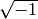, but now we'll do that.
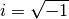
So if you do 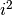 you get 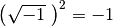. Obviously this weird
"number" is not between 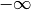 and because no number in that range
behaves like this. It's something else, and the  is short for imaginary.
The numbers between and are known as real numbers, but
and are not real because they behave very differently than
real numbers.
is short for imaginary.
The numbers between and are known as real numbers, but
and are not real because they behave very differently than
real numbers.
A complex number is something real plus something imaginary, and they are often represented in a 2D plane. Like this:
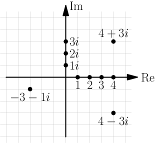
Re is short for Real and Im for Imaginary.
Note how the words "imaginary" and "complex" reflect people's attitudes to these numbers. At first they were considered nonsense, but nowadays there are many uses for complex numbers. This tutorial focuses on a very important way to use them.
The Magic¶
Let's calculate some powers of . We'll need them later.
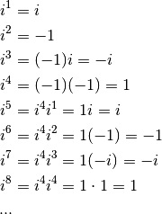
We can see a pattern.
In the Taylor chapter we created these kinda-mind-blowing series representations:
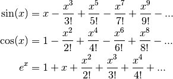
Let's try to calculate 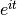 where  is a real number and let the magic
happen.
is a real number and let the magic
happen.
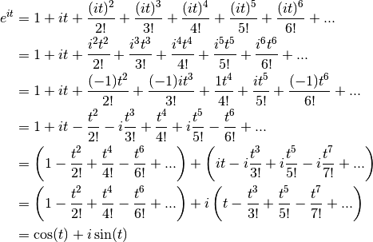
Boom. Can you believe that. We started with  which we got out of
exponentials and derivatives and the , but we
ended up with trig functions that are defined in a unit circle!
which we got out of
exponentials and derivatives and the , but we
ended up with trig functions that are defined in a unit circle!
This is crazness is known as Euler's formula. Speaking of Euler, he's known for
many many other math
things
as well, and I find it really amazing how much awesome math stuff he did. Even
things like the  notation with parentheses and the concept of a function
are from him.
notation with parentheses and the concept of a function
are from him.
After all the amazement, let's have a look at what we got. We know that  is the
is the  coordinate and is the
coordinate and is the  coordinate in a unit circle (see
this thing), and a moment ago we drew a
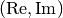-plane. Actually the formula represents a unit circle in
plane!
coordinate in a unit circle (see
this thing), and a moment ago we drew a
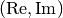-plane. Actually the formula represents a unit circle in
plane!

Just looking at the above drawing, everything else makes sense perfectly except the label. It's just crazy.
Example: Trig Identities¶
Let's draw another unit circle with angles and 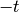. The things in
parentheses are  coordinates.
coordinates.

The black dots are aligned horizontally so coordinates are the same and
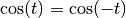. But the coordinates are opposite, so
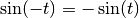. These work with any .
Let's plug some stuff to Euler's formula and use these trig things:
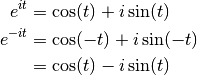
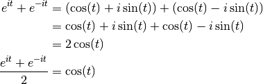
Now your mind should be really blown up.
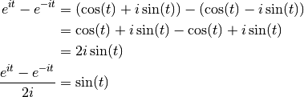
Handy thing: 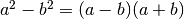
Proof:

In this case we need to plug in  and
and  .
.
Equally head-exploding.
For example, let's try to find another way to represent 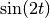:

This is just the tip of the iceberg. It's possible to find dozens of handy-dandy trig equations like this. Most trig things can be proved without Euler's formula, but this magic way can be much easier and faster.
Exercise
This is a true story. A friend of mine had watched a youtube video that used this formula, and he wanted to see a proof of it:
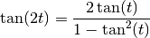
Here 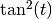 means 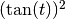, and people use the notation because it's easier and faster to write although it doesn't make much sense. Prove the above formula.
There are many ways to do this and the way I managed to do it is really long compared to e.g. Wikipedia's proof. If you want to try to do it like I did, prove these things in this order:

- 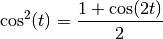
- 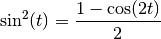
Then I used the 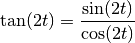 thing we learned here and the 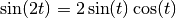 thing that we proved above.
Example: Famous Constants¶
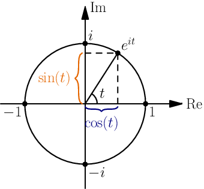
If we plug in 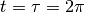 we get this:

This makes sense because if we start at 1 and rotate a full turn ( radians), we get back to where we started.
radians), we get back to where we started.
But if we don't rotate at all we also end up at 1:
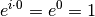
Equations like 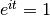 have an infinite number of solutions because any number of full turns produces the 1.
We could also plug in 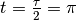 to go a half turn and end up at 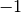, and we get a very famous equation:
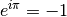